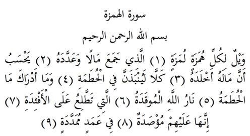

4

Hümeze Suresi
Anlamı: Er-Rahman, er-Rahim Allah’ın adıyla
Bütün mezeleyicilerin, alaycıların vay haline (1). Servet yığan ve onu sayıp duran (2). sanır ki, serveti onu ölümsüzleştirecek (3). Hayır, asla! Hutama’ya kesin itilecektir o (4). Hutama nedir bilir misin? (5). Allah’ın kızıştırılan ateşi (6). Ve kalplere kadar ulaşan (7), girenlerin üzerlerine kapatılan (8). Upuzun direklere bağlanarak (9).
Açıklam: Hümeze, insanları yüzlerine karşı mezelemeyi, alaya almayı, aşağılamayı adet haline getiren demektir.
Lümeze, ise bunu arkalarından yapan, gıybeti adet haline getirendir.
Hutama, Cehennemin isimlerinden biridir ve parçalayıp öğüten anlamındadır. Sanki insanların kemiklerini kırıp öğüttüğü ve ‘yok mu başka!’ dediği için ona bu ad verilmiştir.
Tek başına servet biriktirip onu saymak haram değildir. Burada kastedilen; bütün hedefi ve gayesi servet biriktirmek olan, bunun için yaşayan ve malının zekâtını ve ondaki diğer hakları vermeyen demektir.